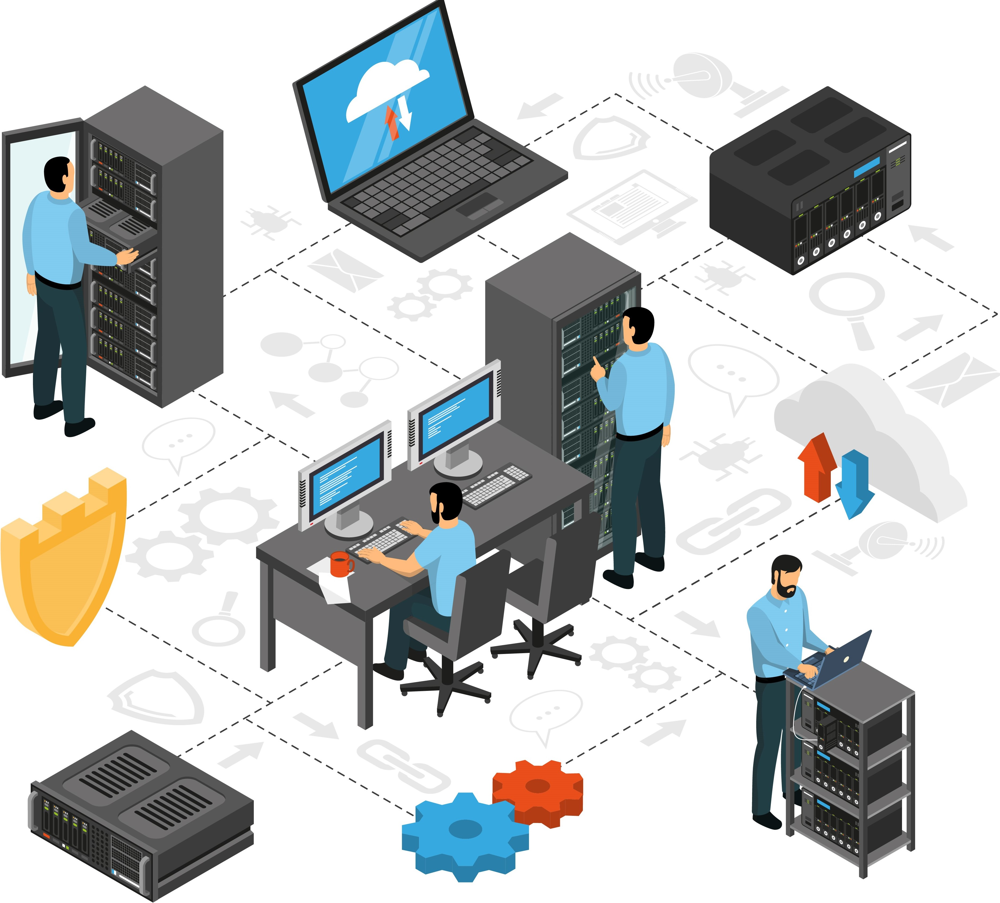
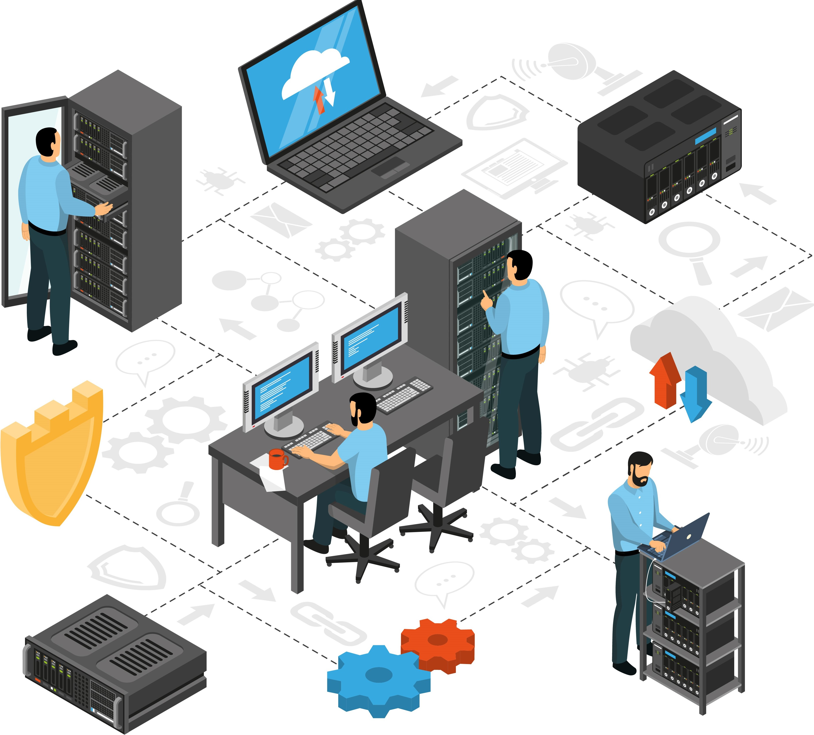

Welcome to my portfolio! An IT student at Data Center College of the Philippines. This portfolio serves as a comprehensive showcase of my academic and project-based endeavors in the field of Information Technology. Through this platform, I aim to highlight the skills and knowledge I have acquired throughout my studies and practical experiences.
My journey in IT began with a passion for technology and its potential to solve complex problems. Over time, this interest has evolved into a deep commitment to understanding various aspects of computing, from programming and software development to system design and data management. Each project featured in this portfolio represents a step forward in my quest to become a well-rounded IT professional.
In this portfolio, you will find a diverse collection of projects that demonstrate my technical abilities and problem-solving skills. These projects span various domains, including web development, software engineering, and database management. Each project reflects my dedication to applying theoretical knowledge to real-world scenarios, showcasing both creativity and technical proficiency.
.jpg)
 
